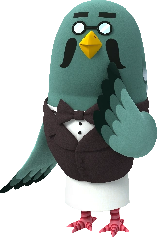

당신은... <마스터>입니다!
말수가 적고 항상 자기 할 일에 몰두해있는 당신. 하지만 과묵하게 자기 할 일을 하는 모습마저 사람들에게는 매력적으로 보인다는 사실을 알고 있나요? 친해지기까지 시간이 좀 걸리지만, 친해지면 볼 수 있는 당신만의 우직하고 단단한 내면은 사람들이 당신에게 더욱 푹 빠지게 할지도 몰라요! 그런 당신은 <마스터>가 가장 잘 어울린답니다!
테스트 해보기